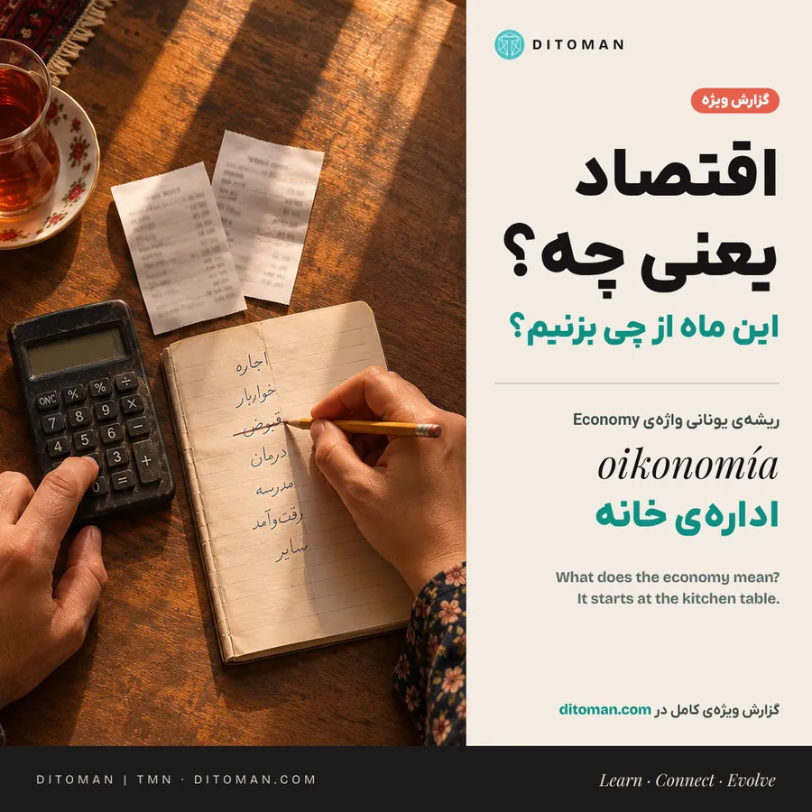

اقتصاد یعنی چه؟ جوابش روی میز آشپزخانه است
What does the economy mean? The answer is on the kitchen table
Economy once meant running a household. How ordinary people really experience the economy, the Iranian family budget in numbers, and the skills families use to get by.
اقتصاد از اول یعنی ادارهی خانه. مردم عادی اقتصاد را چطور تجربه میکنند، دخل و خرج خانوار ایرانی با عدد، و مهارتهایی که خانوادهها با آن از پس زندگی برمیآیند.
حمیده، مادر ۳۹ سالهی دو فرزند در رشت، به رویترز گفت: «ماه گذشته مجبور شدیم به خانهی پدر و مادرم برگردیم، چون شوهرم در بهار از یک کارخانهی کوچک کاشی تعدیل شد.» در خبرها، بیکاری و هزینهی مسکن دو موضوع جدا هستند. برای خانوادهی حمیده هر دو به یک سؤال رسیدند: ماه بعد کجا زندگی میکنیم؟ [۳۱]
اقتصاد از جایی که مردم ایستادهاند یعنی همین: با پول، وقت و امکاناتی که داریم، امروز را چطور بگذرانیم و برای فردا جا باز کنیم؟
دو خانواده را تصور کنید که در یک سال به یک اندازه درآمد دارند. در یکی حقوق سر ماه میرسد و در دیگری پولِ کار پروژهای با چند هفته تأخیر. موعد اجاره برای هر دو سر جایش است. روی کاغذ درآمدشان یکی است؛ در عمل، یکی برای ماه بعد برنامه میریزد و دیگری شاید برای همان اجاره قرض بگیرد. وقتی تلویزیون از «رشد اقتصادی» حرف میزند، بیشتر ما به همینها فکر میکنیم: نان امروز، اجارهی سال بعد، قسط ماه بعد. و حق با ماست. اقتصاد، پیش از آنکه علم شود، اسم کاری بود که هر خانواده هر روز میکند.
۱. اقتصاد از اول یعنی «ادارهی خانه»
کلمهی Economy از یونانی اویکونومیا میآید: اویکوس یعنی خانه و خانوار، و نوموس یعنی اداره و تقسیم. قدیمیترین کتابی که با این نام میشناسیم، «اویکونومیکوس» گزنفون در قرن چهارم پیش از میلاد، گفتوگویی دربارهی ادارهی خانه و مزرعه است؛ نه بانک مرکزی و نه بورس. [۱، ۲]
واژهی فارسی ما هم همین را میگوید. «اقتصاد» در لغتنامهی دهخدا یعنی «میانه رفتن» و «میانهروی در هر کاری»، و فرهنگ معین آن را «رعایت اعتدال در دخل و خرج» معنی کرده است. یعنی همان کاری که مادر و پدر سر ماه با حقوق میکنند. [۳]
۲. مردم اقتصاد را با سبد خرید میسنجند، نه با جدول
پژوهشهای چند دههی اخیر نشان میدهند مردم عادی اقتصاد را از تجربهی روزمرهی خودشان میفهمند و این کار غیرمنطقی نیست:
- قیمت چیزهایی که زیاد میخریم. پژوهشی روی دادهی خرید بیش از ۹۰ هزار خانوار آمریکایی نشان داد مردم انتظار تورم را بر اساس قیمت کالاهایی میسازند که بیشتر میخرند، مثل نان و شیر و بنزین، نه بر اساس وزنی که شاخص رسمی به هر کالا میدهد. گرانی بیشتر از ارزانی به چشم میآید و قیمت کالاهایی که نمیخریم، اصلاً اثری ندارد. [۴]
- «حقوقم عقب میماند». در نظرسنجی استفانی استانچوا از دانشگاه هاروارد (۲۰۲۴)، ۸۱٪ آمریکاییها گفتند قیمتها از دستمزدها جلو میزنند. فقط ۹٪ افزایش حقوقشان را به تورم نسبت دادند و ۲۰٪ آن را حاصل کار خودشان دانستند. [۵]
- فاصلهی اقتصاددان و مردم. رابرت شیلر، برندهی نوبل، در ۱۹۹۶ از مردم آمریکا، آلمان و برزیل پرسید چرا تورم را دوست ندارند. بزرگترین شکاف، بین اقتصاددانها و غیراقتصاددانها بود: مردم تورم را یعنی پایین آمدن سطح زندگی. [۶]
- تجربه، معلم اول. پژوهش مالمندیر و ناگل نشان داد هر نسل انتظارش از تورم را با تورمی میسازد که در عمر خودش دیده است. [۷]
- «رکود حسی». در آمریکای ۲۰۲۳، تورم از ۹٫۱٪ به ۳٫۴٪ رسیده بود و بیکاری نزدیک کمترین سطح ۵۰ سال اخیر بود، اما حس مردم از اقتصاد بد ماند. اسمش را گذاشتند Vibecession. گالوپ در ۱۴۰۵ هم گزارش داد هزینهی زندگی بزرگترین دغدغهی مالی آمریکاییهاست و رکورد ۵۵٪ میگویند وضع مالی خودشان بدتر میشود. [۸، ۹]
یعنی آنچه اقتصاددان «تورم» مینامد، مردم «سفره» مینامند. هر دو دربارهی یک چیزند، از دو پنجرهی متفاوت.
۳. خانواده؛ کوچکترین و مهمترین بنگاه اقتصادی
- خانه یک کارگاه است. گری بکر، اقتصاددان برندهی نوبل، در ۱۹۶۵ خانوار را «کارخانهی کوچکی» دانست که با ترکیب وقت و کالا، غذا، تربیت بچه و آرامش «تولید» میکند. [۱۰]
- کار بیمزدِ خانه. طبق برآورد سازمان همکاری اقتصادی و توسعه، اگر آشپزی، نظافت و مراقبت از بچه و سالمند را با دستمزد بازار حساب کنیم، در کشورهای G7 بین ۱۵ تا ۲۶٪ تولید ناخالص داخلی به آن اضافه میشود. این کار در آمار رسمی دیده نمیشود. [۱۱]
- پاکتهای ذهنی. ریچارد تیلر، نوبلیست اقتصاد رفتاری، نشان داد خانوادهها پول را در «حسابهای ذهنی» جدا میگذارند: پول اجاره، پول مدرسه، پول عید. همان پاکتها و قلکهایی که در خانههای ما آشناست. [۱۲]
۴. هزینههایی که در رسید خرید نمیآیند
وقتی دخل به خرج نمیرسد، خانواده از چیزهای دیگری هم خرج میکند: تعمیر را عقب میاندازد، شیفت اضافه میگیرد، از نزدیکان قرض میکند یا کلاس بچه را به ترم بعد میسپارد. خانهی ارزانتر ممکن است هر روز دو ساعت به رفتوآمد اضافه کند. پختن غذای بیشتر در خانه پول کمتری میبرد و وقت بیشتری میخواهد. برای همین، وقتی میشنویم خانوادهای «این ماه را هم گذراند»، سؤال بعدی مهم است: برای گذراندن این ماه، چه چیزی را از ماههای بعد برداشت؟
- دفترچهی دخل و خرج واقعی. پژوهشگران کتاب «سبد مالی فقرا» (Portfolios of the Poor) حدود یک سال دخل و خرج روزبهروز ۲۵۰ خانوار را در بنگلادش، هند و آفریقای جنوبی ثبت کردند. چیزی که در رقم درآمد سالانه پیدا نبود، با ثبت روزهای دریافت و پرداخت روشن شد: خانوادهها با پساندازهای کوچک، قرض و کمک نزدیکان، پولی را که نامنظم میرسید به خرجی میرساندند که موعدش ثابت بود. [۳۲]
- سؤال ۴۰۰ دلاری. فدرال رزرو آمریکا هر سال میپرسد: اگر خرج ناگهانی ۴۰۰ دلاری پیش بیاید، چطور میپردازید؟ در پیمایش ۲۰۲۵، ۶۳٪ گفتند با پول نقد یا معادلش، و ۱۲٪ گفتند به هیچ روشی از پسش برنمیآیند. همین سؤال را میشود در ایران پرسید: اگر فردا یخچال خراب شود یا حقوق عقب بیفتد، پولش از کجا میآید و کدام برنامه باید صبر کند؟ [۳۳]
۵. اقتصاد خانوادهی ایرانی، با عدد
دخل و خرج. طبق طرح هزینه و درآمد خانوار مرکز آمار برای ۱۴۰۳، یک خانوار شهری بهطور میانگین حدود ۲۷۰ میلیون تومان در سال خرج کرده و حدود ۳۴۰ میلیون تومان درآمد داشته است. برای خانوار روستایی این دو عدد حدود ۱۴۰ و ۲۰۰ میلیون تومان بود. خوراک ۲۴٪ هزینهی خانوار شهری و ۳۸٪ هزینهی خانوار روستایی است. بیشترین هزینهی شهری مال تهران (حدود ۳۹۵ میلیون تومان) و کمترین مال سمنان (حدود ۱۵۳ میلیون تومان) بود. [۱۳]
خانه. در سرشماری ۱۳۹۵، ۳۱٫۷٪ خانوارهای کشور مستأجر بودند؛ یعنی حدود ۶۸٪ در خانهی ملکی زندگی میکردند. در تهران سهم مستأجرها ۴۳٫۵٪ بود. در ۱۳۹۹ مسکن ۳۷٪ هزینهی خانوار شهری را میبرد. [۱۴، ۱۵]
گرانی برای همه یک شکل ندارد. به گزارش رسانهها از طرح هزینه و درآمد ۱۴۰۴ مرکز آمار، حدود ۴۲٪ کل هزینهی خانوار شهری به مسکن، سوخت و روشنایی رفته و در خانوار روستایی خوراک و دخانیات حدود ۴۲٪ هزینه بوده، در برابر حدود ۲۸٪ در شهر. یعنی یک خانواده گرانی را بیشتر روز تمدید اجاره حس میکند و خانوادهای دیگر هر بار که برای خرید خوراک میرود. [۳۵]
تورم؛ واقعیتی که باید گفت. در مهر ۱۴۰۵ تورم سالانه به حدود ۷۷٪ رسید و قیمت سبد مصرفی کشور بهطور متوسط ۸۸٫۷٪ بالاتر از مهر پارسال بود. حالا فکر کنید موقع خرید همان پول دفعهی پیش را میدهید، ولی با کیسهی سبکتری بیرون میآیید. تورم برای دهکهای پایین معمولاً بیشتر است، چون سهم خوراک در سبدشان بیشتر است؛ در یک ماه از ۱۴۰۱ این عدد برای فقیرترین دهک ۴۲٫۷٪ و برای ثروتمندترین ۳۸٫۳٪ بود. [۱۶، ۱۷، ۳۴]
کار. در ۱۴۰۳ نرخ بیکاری ۷٫۶٪ بود، نیم واحد کمتر از سال قبل؛ بیکاری جوانان هم ۱٫۱ واحد کم شد و به ۲۰٫۱٪ رسید. اما ۳۸٫۵٪ شاغلان معمولاً هفتهای ۴۹ ساعت یا بیشتر کار میکنند. مشارکت اقتصادی زنان ۱۴٫۱٪ است، در برابر ۶۸٫۱٪ مردان. [۱۸]
۶. هنر خانوادهی ایرانی: اقتصادی که در آمار دیده نمیشود
اقتصاددانها بیشتر به نرخ ارز و بودجهی دولت نگاه میکنند. اما خانوادهی ایرانی سالهاست با ابزارهای خودش اقتصادش را اداره میکند:
- طلا، قلکِ ایرانی. خرید سکه و طلا راه سنتی حفظ ارزش پول است. حالا سرویسهای طلای آنلاین اجازه میدهند با مبلغی به اندازهی حدود یک دلار هم طلا پسانداز کرد. [۱۹]
- قرضالحسنه و صندوقهای خانگی. فقط بانک قرضالحسنهی مهر در یک سال ۲٫۳ میلیون وام بدون بهره داده است. در ۱۴۰۱ حدود ۸۹۶ هزار وام ازدواج و ۲۲۴ هزار وام ودیعهی مسکن پرداخت شد. صندوقهای خانگی و قرعهکشیهای فامیلی هم نسخهی ایرانی همان «باشگاههای پسانداز گردشی» هستند که در آفریقا و آسیا رایجاند. [۲۰، ۲۱]
- قسط، به سبک دیجیتال. حدود ۴٫۵ میلیون نفر از ابزارهای «حالا بخر، بعداً بپرداز» استفاده کردهاند و ۵٫۵٪ خریدهای دیجیکالا قسطی بوده است. [۲۲]
- بازار دستدوم. دیوار به گزارشها سالانه بیش از ۵۰ میلیون کاربر دارد؛ وسیلهای که در یک خانه اضافه است، در خانهی دیگر به کار میآید. [۲۳]
- خانواده، بیمهی اول. کمک پدر و مادر برای اجاره، جهیزیهی چندنسلی، و حوالهی خویشاوندان خارج از کشور (حدود ۰٫۶٪ تولید ناخالص داخلی در ۱۳۹۹) شبکهی امنی است که در هیچ ترازنامهای نمیآید. [۲۴]
۷. دلخوشیها؛ آنچه در نیم قرن ساخته شد
- سواد: از ۳۶٫۵٪ بزرگسالان در ۱۳۵۵ به ۸۸٫۹٪ در ۱۴۰۲. [۲۵]
- امید به زندگی: از ۵۸ سال در ۱۳۵۹ به حدود ۷۸ سال در ۱۴۰۳. [۲۶]
- فقر: طبق بانک جهانی، فقر با خط ۶٫۸۵ دلار در روز از ۲۹٫۳٪ در ۱۳۹۹ به ۲۱٫۹٪ در ۱۴۰۱ رسید و حدود ۶٫۱ میلیون نفر از فقر بیرون آمدند؛ مصرف ۴۰٪ پایین جامعه سریعتر از بقیه رشد کرد؛ افزایش درآمد از مزد و کار آزاد، کنار حمایت نقدی و مستمری، به این کاهش کمک کرد. این عددها مال پیش از تورم ۱۴۰۴ و ۱۴۰۵ است. [۲۷]
- اینترنت: در ۱۳۹۷، ۷۲٫۸٪ خانوارها اینترنت پرسرعت و ۶۹٫۷٪ رایانه داشتند. [۲۸]
- خانهی بهداشت: خانههای بهداشت و بهورزان محلی، مراقبت اولیه را به روستاها نزدیک کردند. برای یک خانواده، درمان نزدیکتر یعنی هزینهی رفتوآمد کمتر و ساعت کاری کمتری که برای یک مراجعه از دست میرود.
- کمکهای کوچک ولی واقعی: خواهری که چند ساعت از بچه نگهداری میکند تا خواهرش سر کار برود، تعمیرکاری که به یک وسیله چند سال عمر بیشتر میدهد، پدر و مادری که اتاق خالیشان به خانوادهای فرصت میدهد دوباره روی پا بایستد. وقتی گرانی به همه فشار میآورد، برای همین کمککنندهها هم دستبهجیب شدن سختتر میشود؛ پس این شبکه را باید جدی گرفت.
۸. سه سؤالی که هر خانواده میتواند از خودش بپرسد
آنامریا لوساردی و الیویا میچل سه سؤال ساده برای سنجش سواد مالی طراحی کردند: سود مرکب، تورم و پخش کردن ریسک. فقط حدود یکسوم آمریکاییهای بالای ۵۰ سال به هر سه درست جواب دادند. [۲۹] نسخهی خانگیاش این است: 1. اگر پولم را جایی بگذارم که سود ثابت میدهد، تورم با ارزش آن چه میکند؟ 2. پساندازم همه در یک سبد است یا چند سبد؟ 3. اگر فردا هزینهی غیرمنتظرهای پیش بیاید، از کجا میآورم؟ طبق بانک جهانی، در کشورهای کمدرآمد و متوسط حدود ۵۶٪ بزرگسالان میتوانند ظرف یک ماه پول اضطراری جور کنند. [۳۰]
۹. از خانه تا کشور، و برگشت
تصمیم یک خانه روی بازار هم اثر دارد. وقتی هزاران خانواده خرید لباس را عقب میاندازند، مغازهدار و خیاط مشتری کمتری دارند؛ اگر ساعت کار یا استخدام را کم کنند، درآمد خانوادههای دیگری پایین میآید. تصمیمی که برای یک خانه کاملاً منطقی است، وقتی در هزاران خانه تکرار شود، خودش بازار را تکان میدهد. از آن طرف، جنگ، تحریم و افت سرمایهگذاری فرصت کار را کمتر و هزینهی قطعه و مواد اولیه را بیشتر میکنند. اقتصاد کلان و اقتصاد آشپزخانه دو سر یک ریسماناند.
۱۰. نگاه دیتومان
وقتی نان گران میشود، هیچ شاخصی لازم نیست تا خانواده بفهمد چه شده. خانوادهی ایرانی، با طلا و قرضالحسنه و قسط و صندوق خانگی و همبستگی فامیلی، سالهاست یکی از سختترین آزمونهای اقتصادی را با مهارت پشت سر میگذارد. شاید ملموسترین نشانهی بهتر شدن اقتصاد همین باشد که بتوانی قبض تعمیر را بدهی و هنوز پول ثبتنام بچهات در کلاسی که دوست دارد سر جایش باشد. تحلیل اقتصادی هم میتواند از همینجا شروع شود: از سفره، دخل و خرج و تصمیمهای کوچک هر روز. با هم دنبالش میکنیم.
پرسش برای شما: در یک سال گذشته کدام تصمیم را عوض کردید که بهتر از هر عددی وضعیت اقتصادی خانهتان را توضیح میدهد؟
منابع
- ریشهی واژهی Economy. Etymologist
- گزنفون، اویکونومیکوس. Binghamton University
- معنی اقتصاد در دهخدا و معین. آبادیس
- D'Acunto, Malmendier, Ospina و Weber، «قیمت خوراکیها و انتظار تورم»، Journal of Political Economy، ۲۰۲۱. متن مقاله
- Stantcheva، «چرا تورم را دوست نداریم؟»، ۲۰۲۴. Social Economics Lab · NBER
- Shiller، «چرا مردم تورم را دوست ندارند؟»، ۱۹۹۶. NBER
- Malmendier و Nagel، «یادگیری از تجربهی تورم»، QJE، ۲۰۱۶. RePEc
- رکود حسی. Fortune
- گالوپ، دغدغههای مالی آمریکاییها، ۲۰۲۶. Gallup
- Becker، «نظریهی تخصیص وقت»، ۱۹۶۵. IZA
- ارزش کار بیمزد خانگی در G7. OECD
- Thaler، «حسابداری ذهنی»، ۱۹۹۹. متن مقاله
- نتایج هزینه و درآمد خانوار ۱۴۰۳ مرکز آمار. ICE
- سهم مستأجران در سرشماری ۱۳۹۵. Financial Tribune
- سالنامهی آماری ۱۳۹۹، فصل هزینه و درآمد. مرکز آمار ایران
- تورم مرداد ۱۴۰۵ بر پایهی دادهی مرکز آمار. Marin Consult
- شکاف تورم دهکها. Financial Tribune
- نتایج طرح نیروی کار ۱۴۰۳. مرکز آمار ایران
- طلا و پسانداز خانوارها. Al Jazeera
- وامهای بانک قرضالحسنهی مهر. Financial Tribune
- وامهای ازدواج و ودیعهی مسکن ۱۴۰۱. Financial Tribune
- خرید قسطی دیجیتال. Financial Tribune
- دیوار. Wikipedia
- حوالههای خویشاوندان، بانک جهانی. FRED
- نرخ سواد بزرگسالان. FRED
- امید به زندگی. FRED
- بانک جهانی، فقر و رفاه ایران، ۲۰۲۴. World Bank
- اینترنت و رایانه در خانوارها. Financial Tribune
- سه سؤال سواد مالی. Wharton
- بانک جهانی، Global Findex 2025. CGAP · World Bank
- رویترز، «ایرانیها از ضروریات میزنند»، ۷ آبان ۱۴۰۵. Al-Monitor
- Collins، Morduch، Rutherford و Ruthven، «سبد مالی فقرا»، ۲۰۰۹. Portfolios of the Poor
- فدرال رزرو، رفاه اقتصادی خانوارهای آمریکا در ۲۰۲۵. Federal Reserve
- تورم مهر ۱۴۰۵. روزنامهی تعادل
- نتایج هزینه و درآمد خانوار ۱۴۰۴. خبرگزاری مهر
تصویر کاور: تصویر نمونه، ساختهشده با هوش مصنوعی. آخرین بازبینی: ۱۹ آبان ۱۴۰۵